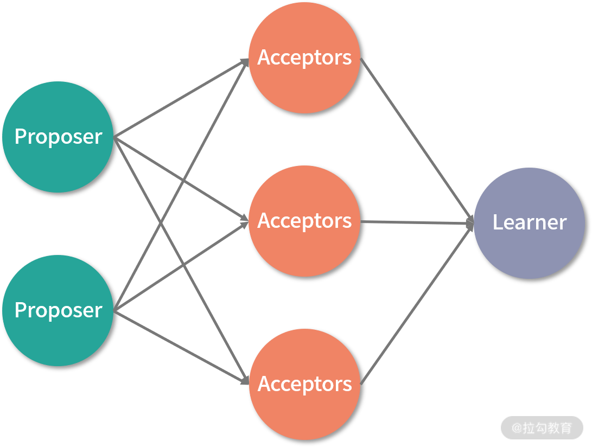
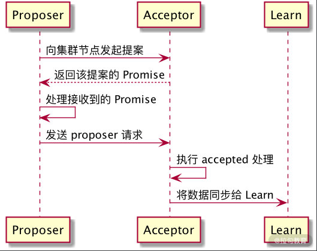

- 00 开篇词：选择 ZooKeeper，一步到位掌握分布式开发.md.html
- 01 ZooKeeper 数据模型：节点的特性与应用.md.html
- 02 发布订阅模式：如何使用 Watch 机制实现分布式通知.md.html
- 03 ACL 权限控制：如何避免未经授权的访问？.md.html
- 04 ZooKeeper 如何进行序列化？.md.html
- 05 深入分析 Jute 的底层实现原理.md.html
- 06 ZooKeeper 的网络通信协议详解.md.html
- 07 单机模式：服务器如何从初始化到对外提供服务？.md.html
- 08 集群模式：服务器如何从初始化到对外提供服务？.md.html
- 09 创建会话：避开日常开发的那些“坑”.md.html
- 10 ClientCnxn：客户端核心工作类工作原理解析.md.html
- 11 分桶策略：如何实现高效的会话管理？.md.html
- 12 服务端是如何处理一次会话请求的？.md.html
- 13 Curator：如何降低 ZooKeeper 使用的复杂性？.md.html
- 14 Leader 选举：如何保证分布式数据的一致性？.md.html
- 15 ZooKeeper 究竟是怎么选中 Leader 的？.md.html
- 16 ZooKeeper 集群中 Leader 与 Follower 的数据同步策略.md.html
- 17 集群中 Leader 的作用：事务的请求处理与调度分析.md.html
- 18 集群中 Follow 的作用：非事务请求的处理与 Leader 的选举分析.md.html
- 19 Observer 的作用与 Follow 有哪些不同？.md.html
- 20 一个运行中的 ZooKeeper 服务会产生哪些数据和文件？.md.html
- 21 ZooKeeper 分布式锁：实现和原理解析.md.html
- 22 基于 ZooKeeper 命名服务的应用：分布式 ID 生成器.md.html
- 23 使用 ZooKeeper 实现负载均衡服务器功能.md.html
- 24 ZooKeeper 在 Kafka 和 Dubbo 中的工业级实现案例分析.md.html
- 25 如何搭建一个高可用的 ZooKeeper 生产环境？.md.html
- 26 JConsole 与四字母命令：如何监控服务器上 ZooKeeper 的运行状态？.md.html
- 27 crontab 与 PurgeTxnLog：线上系统日志清理的最佳时间和方式.md.html
- 28 彻底掌握二阶段提交三阶段提交算法原理.md.html
- 29 ZAB 协议算法：崩溃恢复和消息广播.md.html
- 30 ZAB 与 Paxos 算法的联系与区别.md.html
- 31 ZooKeeper 中二阶段提交算法的实现分析.md.html
- 32 ZooKeeper 数据存储底层实现解析.md.html
- 33 结束语 分布技术发展与 ZooKeeper 应用前景.md.html
30 ZAB 与 Paxos 算法的联系与区别
在之前的课程中，我们一直围绕 ZooKeeper 的一致性协议算法 ZAB 协议算法来研究其底层实现原理，而为了能够更加全面地掌握分布式一致性的解决方法，在掌握 ZAB 协议的情况下，我们再进一步学习另一种算法： Paxos 算法。我们会通过研究 Paxos 算法的实现原理，来分析它与 ZAB 协议有什么不同，及它们各自的优缺点。
Paxos 算法
在分布式一致性问题的解决方案中，Paxos 算法可以说是目前最为优秀的。很多方案，包括我们学习的 ZooKeeper 的 ZAB 协议算法都是在其基础上改进和演变过来的。
Paxos 算法是基于消息传递的分布式一致性算法，很多大型的网络技术公司和开源框架都采用 Paxos 算法作为其各自的底层解决方案，比如 Chubby 、 Megastore 以及 MySQL Group Replication 。 Paxos 算法运行在服务器发生宕机故障的时候，能够保证数据的完整性，不要求可靠的消息传递，可容忍消息丢失、延迟、乱序以及重复，保证服务的高可用性。
底层实现
介绍完 Paxos 算法能够解决哪些问题后，接下来我们继续学习 Paxos 算法的底层实现过程。保证分布式系统下数据的一致性操作，本质是协调运行在不同的网络服务器上的线程服务，使这些服务就某一个特定的数据执行一致性的变更操作。在整个 Paxos 算法的实现过程中，将参与算法的集群中的全部服务器，分成三种角色：提议者（Proposer）、决策者（Acceptor）、决策学习者（Learner）。
三种角色
先来看看三种角色的具体分工。
- 提议者（Proposer）：提出提案（Proposal）。Proposal 信息包括提案编号（Proposal ID）和提议的值（Value）。
- 决策者（Acceptor）：参与决策，回应 Proposers 的提案。收到 Proposal 后可以接受提案，若 Proposal 获得超过半数 Acceptors 的许可，则称该 Proposal 被批准。
- 决策学习者：不参与决策，从 Proposers/Acceptors 学习最新达成一致的提案（Value）。
经过我们之前对 ZooKeeper 的学习，相信对 Paxos 算法的集群角色划分并不陌生。而与 ZAB 协议算法不同的是，在 Paxos 算法中，当处理来自客户端的事务性会话请求的过程时，首先会触发一个或多个服务器进程，就本次会话的处理发起提案。当该提案通过网络发送到集群中的其他角色服务器后，这些服务器会就该会话在本地的执行情况反馈给发起提案的服务器。发起提案的服务器会在接收到这些反馈信息后进行统计，当集群中超过半数的服务器认可该条事务性的客户端会话操作后，认为该客户端会话可以在本地执行操作。
上面介绍的 Paxos 算法针对事务性会话的处理投票过程与 ZAB 协议十分相似，但不同的是，对于采用 ZAB 协议的 ZooKeeper 集群中发起投票的机器，所采用的是在集群中运行的一台 Leader 角色服务器。而 Paxos 算法则采用多副本的处理方式，即存在多个副本，每个副本分别包含提案者、决策者以及学习者。下图演示了三种角色的服务器之间的关系。

事务处理过程
介绍完 Paxos 算法中的服务器角色和投票的处理过程后，接下来我们再来看一下 Paxos 针对一次提案是如何处理的。如下图所示，整个提案的处理过程可以分为三个阶段，分别是提案准备阶段、事务处理阶段、数据同步阶段。我们分别介绍一下这三个阶段的底层处理逻辑。

- 提案准备阶段：该阶段是整个 Paxos 算法的最初阶段，所有接收到的来自客户端的事务性会话在执行之前，整个集群中的 Proposer 角色服务器或者节点，需要将会话发送给 Acceptor 决策者服务器。在 Acceptor 服务器接收到该条询问信息后，需要返回 Promise ，承诺可以执行操作信息给 Proposer 角色服务器。
- 事务处理阶段：在经过提案准备阶段，确认该条事务性的会话操作可以在集群中正常执行后，Proposer 提案服务器会再次向 Acceptor 决策者服务器发送 propose 提交请求。Acceptor 决策者服务器在接收到该 propose 请求后，在本地执行该条事务性的会话操作。
- 数据同步阶段：在完成了事务处理阶段的操作后，整个集群中对该条事务性会话的数据变更已经在 Acceptor 决策者服务器上执行完成，当整个集群中有超过半数的 Acceptor 决策者服务器都成功执行后，Paxos 算法将针对本次执行结果形成一个决议，并发送给 Learner 服务器。当 Learner 服务器接收到该条决议信息后，会同步 Acceptor 决策者服务器上的数据信息，最终完成该条事务性会话在整个集群中的处理。
Paxos PK ZAB
经过上面的介绍我们对 Paxos 算法所能解决的问题，以及底层的实现原理都有了一个详细的了解。现在结合我们之前学习的 ZooKeeper 相关知识，来看看 Paxos 算法与 ZAB 算法的相同及不同之处。
相同之处是，在执行事务行会话的处理中，两种算法最开始都需要一台服务器或者线程针对该会话，在集群中发起提案或是投票。只有当集群中的过半数服务器对该提案投票通过后，才能执行接下来的处理。
而 Paxos 算法与 ZAB 协议不同的是，Paxos 算法的发起者可以是一个或多个。当集群中的 Acceptor 服务器中的大多数可以执行会话请求后，提议者服务器只负责发送提交指令，事务的执行实际发生在 Acceptor 服务器。这与 ZooKeeper 服务器上事务的执行发生在 Leader 服务器上不同。Paxos 算法在数据同步阶段，是多台 Acceptor 服务器作为数据源同步给集群中的多台 Learner 服务器，而 ZooKeeper 则是单台 Leader 服务器作为数据源同步给集群中的其他角色服务器。
总结
本节课我们主要介绍了 Paxos 算法，该算法在解决分布式一致性问题上被广泛采用。Paxos 算法将集群中的服务器或网络节点分为提议者（Proposer）、决策者（Acceptor）、决策学习者（Learner），在处理事务性会话请求的时候，会针对该会话操作在集群中通过提议者（Proposer）服务器发起询问操作，之后由决策者（Acceptor）服务器决定是否执行。在集群中多数服务器都正确执行会话操作后，决策学习者（Learner）会同步（Acceptor）服务器上的数据，并完成最终的操作。